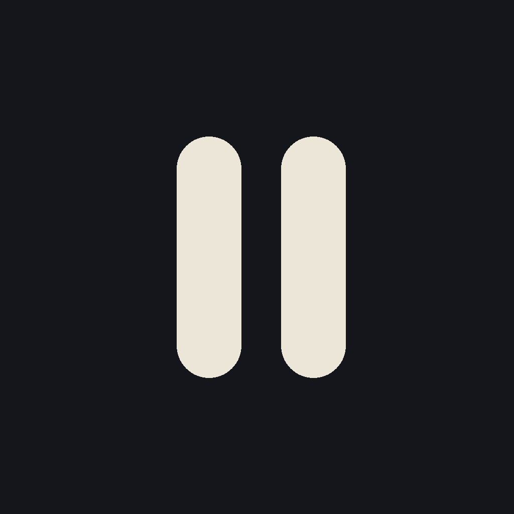
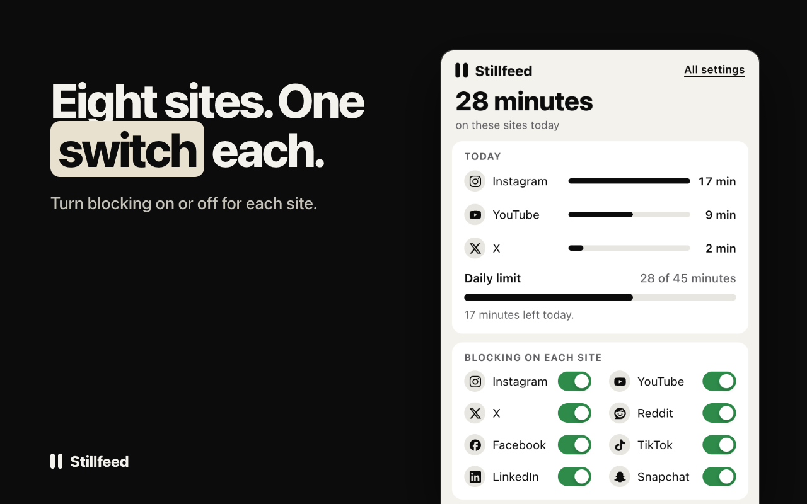

Stillfeed browser extension
A free desktop extension that hides Reels, Shorts and endless feeds on Instagram, YouTube, X, Reddit, Facebook, TikTok, LinkedIn and Snapchat. It leaves messages, profiles, search and the posts you open alone. No account, and nothing leaves your browser.
Chrome, Brave, Edge, Opera and Arc install from the Chrome Web Store listing. Firefox 128 or newer for the Firefox version.

What it does
- Hides the Reels, Shorts, For You, Explore and r/popular style surfaces on eight sites. Each site has its own switch.
- A daily limit that closes the sites until midnight, with five extra minutes once per visit.
- A session timer of two, five, ten or fifteen minutes per visit.
- Quiet hours: named schedules that close chosen sites on chosen days, overnight included.
- A pause of five or ten seconds before a site opens, and grayscale.
Per site
| Reels page and single reels go to your home page; Reels hidden in the menu and collapsed in the feed; Explore grid hidden. Search still works. | |
| YouTube | Shorts hidden in the menu and shelves; Shorts pages blocked. |
| X | Home timeline opens on Following; Trending and right-column trends hidden. |
| r/popular and r/all blocked. | |
| Reels and Watch pages go home; Reels tab, menu entries and feed shelf hidden. | |
| TikTok | For You, Explore, LIVE and Short dramas hidden; you land on Following. |
| My Network goes to the invitation manager; Games goes to your feed; sponsored posts removed from the feed (English only). | |
| Snapchat | Stories, Spotlight and Lenses hidden; you land in Chat. |
It does not block arbitrary websites. The time limits apply in the browser where you set them.
More
- stillfeed.pro/extension: install steps, and a ZIP for manual install
- stillfeed.pro: the iPhone app and the guides
- Extension privacy
- How to block a website in Chrome, or just the feed